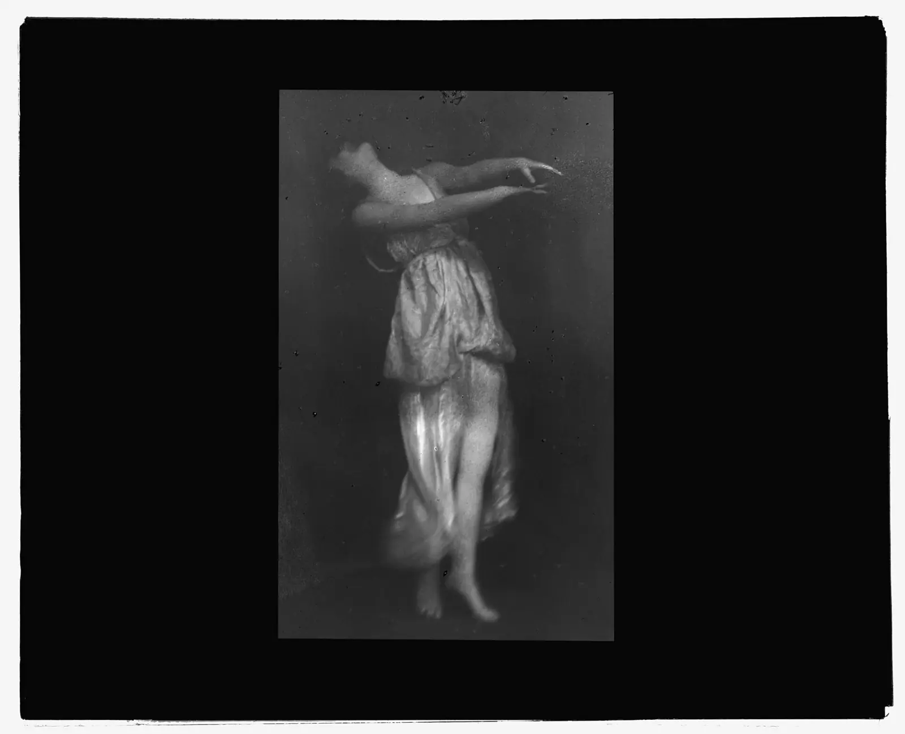
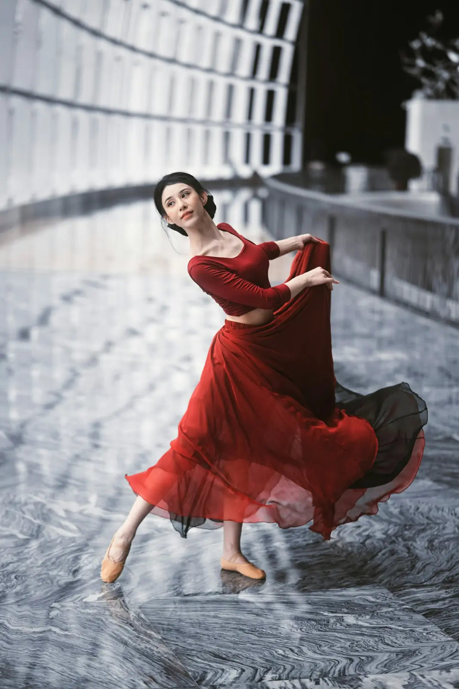
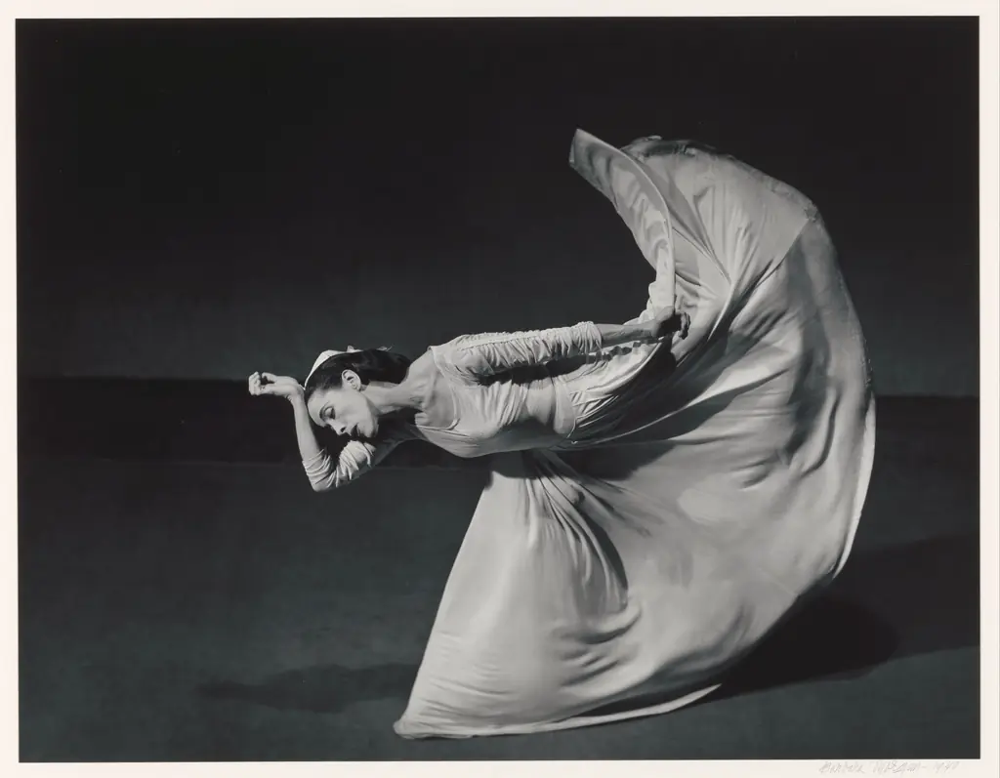
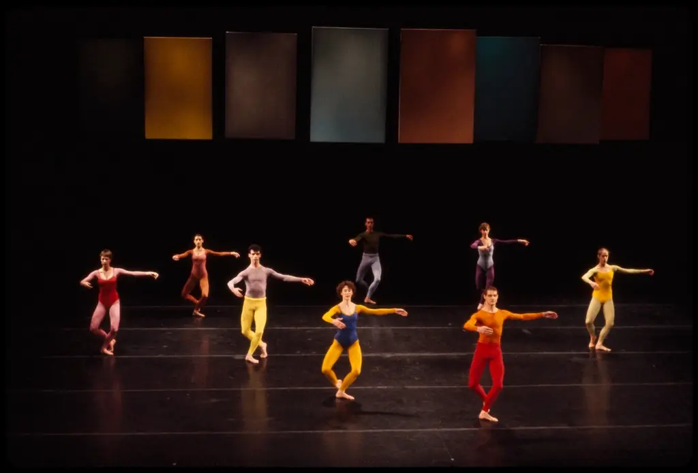
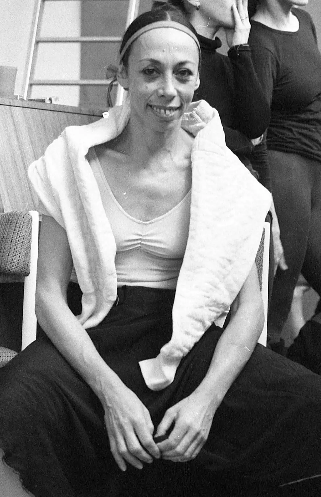
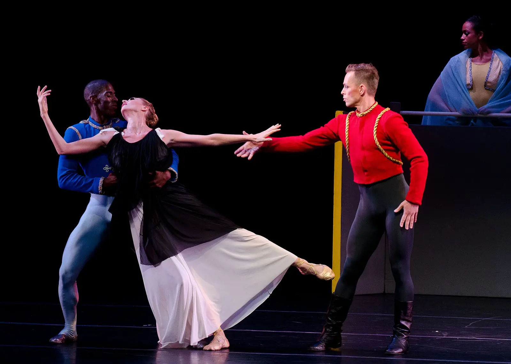
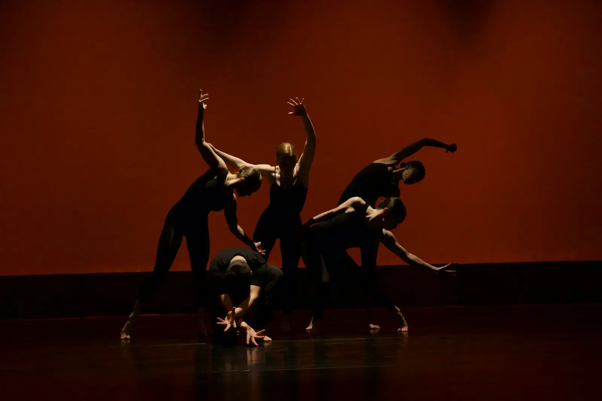
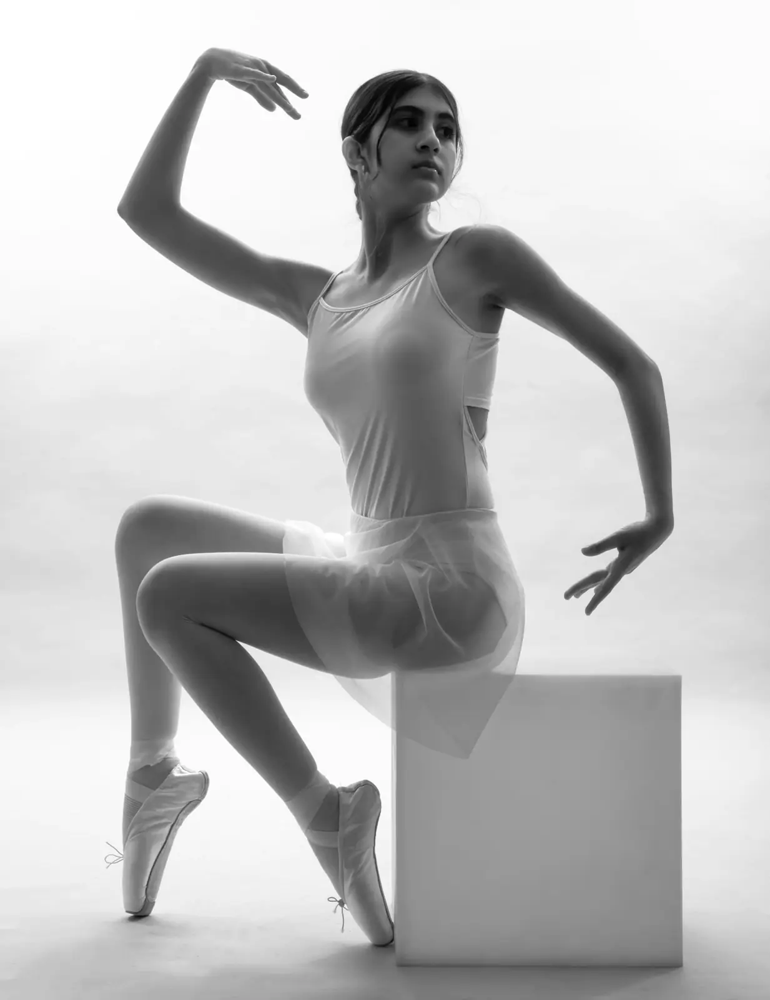
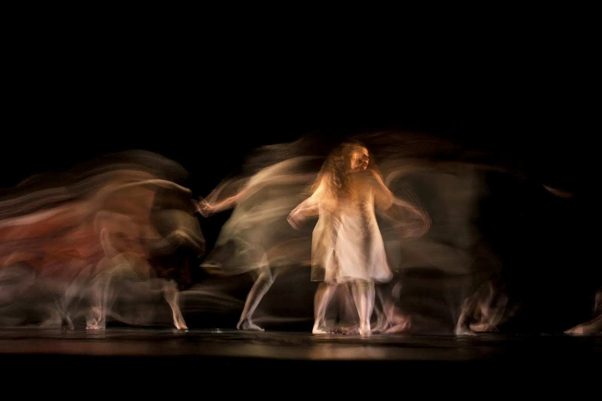
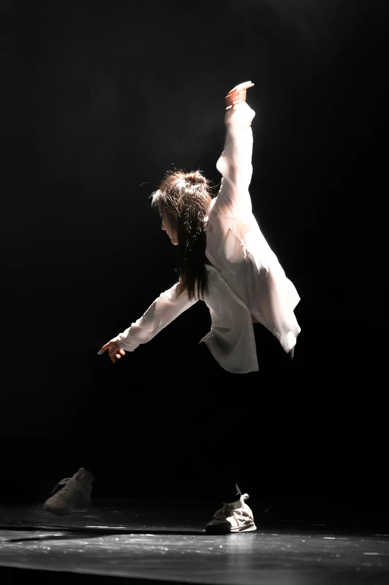

1900
איזדורה דאנקן
רוקדת יחפה, בטוניקה משוחררת, בהשראת אמנות יוון העתיקה, גלים ורוח. בשבילה התנועה מתחילה במקלעת השמש, באמצע הגוף, ומשם זורמת החוצה.

 רני
רנימחול שנולד מהשאלה איך זז גוף אמיתי, עם נשימה, משקל ורגש. כאן לומדים את השורשים, את הטכניקות ואת דרכי היצירה שלו.

בסוף המאה התשע עשרה, מחול על במה היה בעיקר בלט: נעלי פוינט, מחוך, צורות קבועות ואשליה של גוף בלי משקל.
בתחילת המאה העשרים קמו רקדניות, רובן נשים, וזרקו את הנעליים. הן רצו לרקוד את מה שהגוף מרגיש באמת: נשימה, כובד, כעס, שמחה, נפילה. ככה נולד המחול המודרני.
מאז הוא לא הפסיק להשתנות. היום קוראים לו לעתים קרובות "מחול עכשווי", והוא כולל כמעט כל דרך לזוז, כל עוד יש מאחוריה רעיון.
1900
רוקדת יחפה, בטוניקה משוחררת, בהשראת אמנות יוון העתיקה, גלים ורוח. בשבילה התנועה מתחילה במקלעת השמש, באמצע הגוף, ומשם זורמת החוצה.

1926
מקימה להקה בניו יורק ומפתחת טכניקה שעדיין מלמדים בכל העולם: קונטרקשן ורליס, כיווץ מהבטן ושחרור. הריקוד שלה חד, דרמטי ומלא רגש. על במות ישראל היא קשורה ישירות להקמת להקת בת-שבע.

1930
האמפרי בונה את התנועה סביב נפילה והתאוששות: הגוף מאבד שיווי משקל ומוצא אותו מחדש. תלמיד שלה, חוסה לימון, ממשיך את הדרך בטכניקה משלו. הספר של האמפרי, "אמנות יצירת הריקוד", הוא עד היום ספר יסוד לכוריאוגרפים.
1953
מקים להקה ושואל: למה הריקוד צריך לספר סיפור, או אפילו להתאים למוזיקה? הוא מחליט על סדר תנועות בהטלת מטבע, ומאמין שכל נקודה על הבמה יכולה להיות המרכז. המוזיקה של בן זוגו, ג׳ון קייג׳, נכתבת בנפרד.

1964
בתל אביב נוסדת להקת בת-שבע, בתמיכת בת-שבע דה רוטשילד ובליווי האמנותי של מרתה גרהם. היא הופכת לאחת מלהקות המחול המוכרות בעולם.

1973
מקבלת את הלהקה בווּפֶּרטל שבגרמניה והופכת אותה ל"טאנצטיאטר", תיאטרון מחול: רקדנים מדברים, חוזרים על פעולות יומיומיות, מתמודדים עם רגשות ויחסים. השאלה שלה הייתה לא איך אנשים זזים, אלא מה מניע אותם.
1990
אוהד נהרין נעשה המנהל האמנותי של בת-שבע ומפתח את גאגא, שפת תנועה שמבוססת על הקשבה לתחושות בגוף במקום על צורות מוכנות. היום מתרגלים גאגא ברחבי העולם, גם אנשים שאינם רקדנים.
כל כוריאוגרף מודרני פיתח שפה משלו, אבל כמעט כולם עובדים עם אותם יסודות.
התנועה מתחילה ונגמרת עם הנשימה. שאיפה מרימה ומרחיבה, נשיפה מורידה ומשחררת. משפט מודרני נמדד לא פעם בנשימות ולא בספירות. ברקדנית: נשימה.

במקום להיראות קלה כמו בבלט, הרקדנית מודרנית משתמשת בכובד: נותנת לגוף ליפול, נשענת, מעבירה משקל לפרטנרית. התנופה שנוצרת מהנפילה היא שמרימה אותה חזרה.
הרצפה היא לא רק מקום לעמוד עליו. מתגלגלים, מחליקים, יורדים ועולים ממנה. "פלור וורק" הוא תחום שלם.
סיבוב של עמוד השדרה סביב עצמו. מוסיף לתנועה עומק ותלת-ממד.
הבטן נשאבת והגב מתעגל. מבטא כאב, פחד, כוח. השחרור, הרליס, פותח את הגוף מחדש.
תנועה שנוצרת ברגע, מתוך משימה או תחושה. הדרך העיקרית לייצר חומר חדש.

טכניקה היא שיטת אימון: סדרה של תרגילים קבועים שמלמדת את הגוף שפה מסוימת. רקדניות מודרני לומדות בדרך כלל כמה טכניקות, ולוקחות מכל אחת את מה שמתאים להן.
קונטרקשן ורליס, ספירלות, ועבודה רבה על הרצפה בתחילת השיעור. חדה, דרמטית ומבוססת על הבטן והאגן.
פותחה בלוס אנג׳לס על ידי לסטר הורטון. מתמקדת בכוח, גמישות ואורך: גב שטוח, "לטרל טי" שבו הגוף והרגל יוצרים קו אחד לצד, והטיות גדולות. אלווין איילי למד אותה והכניס אותה ללהקה שלו.
נפילה, ריבאונד והשהיה: הגוף נותן לעצמו ליפול, קופץ חזרה, ותלוי לרגע באוויר. עובדת הרבה עם תנופות ועם רצף, תנועה שעוברת מחלק לחלק כמו גל.
מבוססת על חמש פעולות של עמוד השדרה: עיגול, קשת, פיתול, הטיה ועמידה זקופה. מהירה, מדויקת, עם הרבה שינויי כיוון.
התפתחה בשנות השבעים. במקום כוח, יעילות: לתת לשלד לשאת את המשקל, לשחרר מתח מיותר, ולזוז מתוך נשימה ודמיון.
נולדה ב-1972 בעבודה של סטיב פקסטון: שתי רקדניות או יותר זזות יחד דרך נקודת מגע ומשקל משותף, מתגלגלות זו על זו ונשענות זו על זו. מלמדת אמון והקשבה.
השפה של אוהד נהרין. אין מראות בשיעור. המורה נותנת תמונות ותחושות, כמו "גוף שצף במים" או "עצמות שזזות בתוך הבשר", וכל אחת מוצאת את התנועה שלה.
רודולף לאבאן, תאורטיקן מחול מתחילת המאה העשרים, תיאר כל תנועה דרך שלוש שאלות: כבדה או קלה, פתאומית או מתמשכת, ישירה או עקיפה. השילובים יוצרים שמונה איכויות.
| איכות | משקל | זמן | מרחב | דמיינו ש… |
|---|---|---|---|---|
| אגרוף Punch | כבד | פתאומי | ישיר | דופקות בדלת פעם אחת חזק |
| חיתוך Slash | כבד | פתאומי | עקיף | מפלסות דרך בסבך עם מקל |
| לחיצה Press | כבד | מתמשך | ישיר | דוחפות קיר שלא זז |
| סחיטה Wring | כבד | מתמשך | עקיף | סוחטות מגבת רטובה |
| טפיחה Dab | קל | פתאומי | ישיר | מקלידות בטלפון |
| הצלפה Flick | קל | פתאומי | עקיף | מנערות טיפות מהאצבעות |
| החלקה Glide | קל | מתמשך | ישיר | מחליקות יד על שולחן חלק |
| ריחוף Float | קל | מתמשך | עקיף | נוצה שנופלת באוויר |
התרגיל הקלאסי: לוקחים משפט קצר ומבצעים אותו שמונה פעמים, בכל פעם באיכות אחרת. ככה מגלים שאותו משפט יכול להיות כועס, עצוב, מצחיק או שקט.

במודרני לא תמיד מתחילים מהשיר. מתחילים מרעיון, ומחפשים לו תנועה.
הכוריאוגרפית נותנת משימה, והרקדניות מאלתרות: "תזוזו כאילו האוויר סמיך", "תכתבו את השם שלכן עם המרפק", "תמצאו שלוש דרכים לרדת לרצפה". מצלמים, ובוחרים את מה שמעניין.
בעקבות קנינגהם: כותבים שמונה תנועות על פתקים, מגרילים סדר, ומנסים לחבר. המעברים המוזרים שנוצרים מובילים לרעיונות שלא היו עולים אחרת.
תנועה קטנה אחת עוברת לאורך כל הקטע: מוגדלת, מואטת, הפוכה, בכל פעם בגוף של רקדנית אחרת.
"מחול מותאם מקום" נוצר בשביל מקום מסוים: מדרגות, חוף, חלון. התנועה נולדת מהקירות והחפצים.
קטעים שלמים יכולים להיות בלי מוזיקה. הקהל שומע אז את הנשימות, את הכפות על הרצפה, את הבגדים. גם זה סאונד.

אותו משפט, כל רקדנית מתחילה כמה ספירות או נשימות אחרי הקודמת. בקנון מודרני המרווחים לא חייבים להיות שווים.
שתי קבוצות רוקדות בו בזמן חומרים שונים לגמרי, שמשלימים זה את זה. אחת מהירה ונמוכה, השנייה איטית וגבוהה.
רקדנית נשענת על רקדנית, מרימה, נגררת, נתמכת. מתחילים בעבודה איטית ובטוחה: גב אל גב, יד ביד, ורק אחרי שיש אמון מגדילים.
תרגיל אימפרוביזציה: הקבוצה זזה כגוף אחד, ומי שעומדת בחזית מובילה. כשהקבוצה מסתובבת, יש מובילה חדשה. נראה מהקהל כמו כוריאוגרפיה מתוזמנת, ובנוי כולו על הקשבה.
רקדנית אחת מתחילה, ובכל שמינייה מצטרפת עוד אחת, עד שכל הקבוצה יחד. או להפך: כולן מתחילות, ואחת אחרי השנייה נעצרות.




רצפה נקייה, בגדים נוחים, יחפות. מוזיקה שקטה, או בלי.